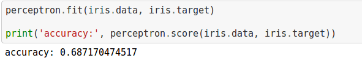

Redes Neurais
com Python e ScikitBianca Rosa
Dev@Stone Pagamentos

Bianca Rosa
- Python <3
- Golang
- JS
- Agile
- Data Science
- PythOnRio / Rails Girls RJ / WWG RJ
Disclaimer
Eu não trabalho com redes neurais. Talvez meu projeto final seja sobre isso. Eu só sou uma pessoa curiosa que estuda redes neurais no tempo livre.
Ou seja, quase nunca.
- Biologia
- Redes Neurais
- Problemas comuns
- Perceptrons
- Multi-Layers Perceptrons
- Deep Learning
Neurônios

Neurônios
- Dentritos
- Corpo
- Axônio
Neurônios
Dentritos
Recebem os estímulos transmitidos pelos outros neurônios.
Neurônios
Corpo
Responsável por coletar e combinar informações vindas de outros neurônios.
Neurônios
Axônio
Responsável por transmitir os estímulos para outras células.
Redes Neurais
Representação computacional de um neurônio humano.
Aprendizado
- Supervisionado
- Não-supervisionado
Aprendizado supervisionado
Pra cada entrada do nosso dataset de treinamento, dizemos qual é o resultado esperado.
Aprendizado não-supervisionado
Pra cada entrada do nosso dataset de treinamento, não dizemos qual é o resultado esperado.
Problemas comuns
Sistemas de recomendação
Problemas comuns
Sistemas que se adaptam às preferências do usuário
Problemas comuns
Processamento de linguagem natural
Problemas comuns
Reconhecimento de dígitos

Perceptrons

Perceptrons
- Inputs (Entrada): x1, x2, x3, ..., xn
- Output (Saída): 1 único output binário
- Weights (Pesos): Números reais expressando a importância dos inputs.
Perceptrons

Perceptrons
Output = 0, se o somatório dos pesos vezes a entrada for menor ou igual a um threshold.
Output = 1, se o somatório dos pesos vezes a entrada for maior a um threshold.

Reescrevendo
Output = 0, se o vetor de pesos * o vetor de entrada + bias for menor ou igual a 0
Output = 1, se o vetor de pesos * o vetor de entrada + bias for menor ou igual a 1.


Problema resolvido?
Problemas linearmente separáveis
- O que são.
- Do que se alimentam.
- Aonde vivem.
É um problema linearmente separável.
Na vida real, raramente vamos encontrar problemas linearmente separáveis.


Multi Layer Perceptrons
- Inputs (Entrada): x1, x2, x3, ..., xn
- Output (Saída): 1 único output entre 0 e 1
- Weights (Pesos): Números reais expressando a importância dos inputs.

Hidden Layers
Deep Learning
Muitas, muitas camadas invisíveis.- Redes neurais não são balas de prata.
- ... e não devem ser usadas apenas por preguiça de implementar um modelo matemático que atenda sua necessidade.

twitter: @__biancarosa
código: github.com/biancarosa/playing-with-networks
manda curriculos: bmendonca@stone.com.br
Michael A. Nielsen, "Neural Networks and Deep Learning", Determination Press, 2015
https://www.coursera.org/learn/neural-networks/
tks :)